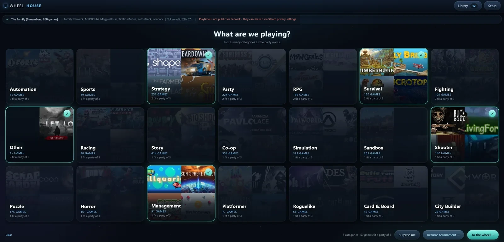
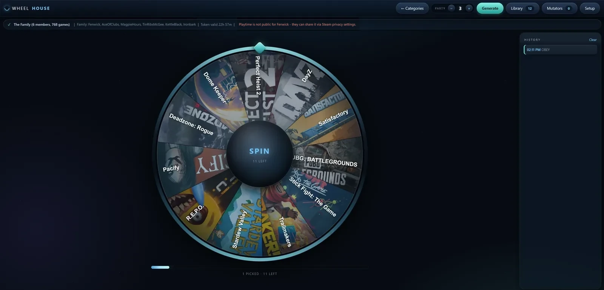
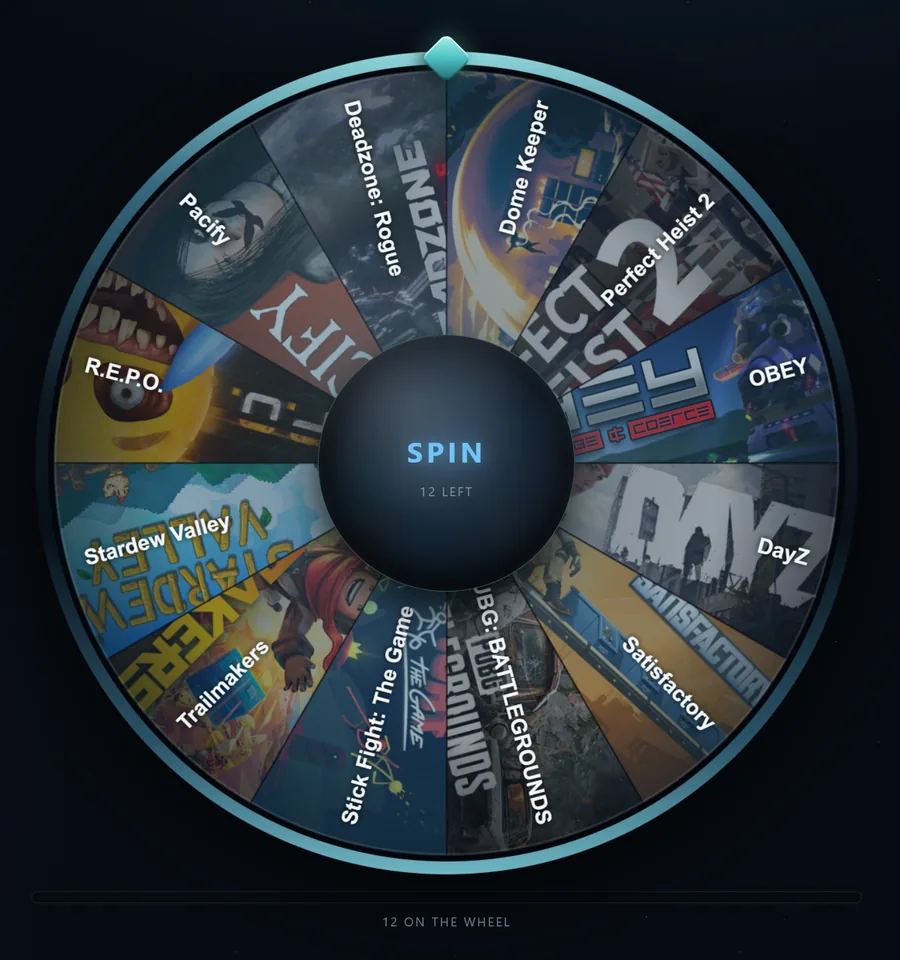
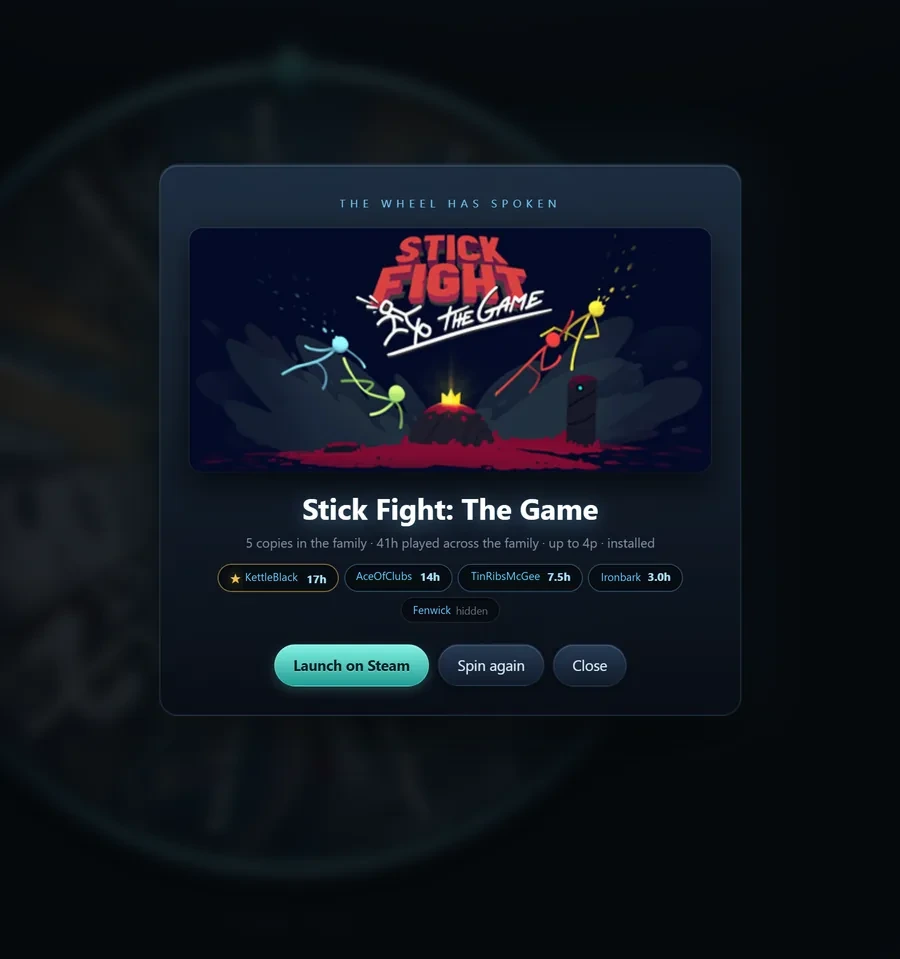
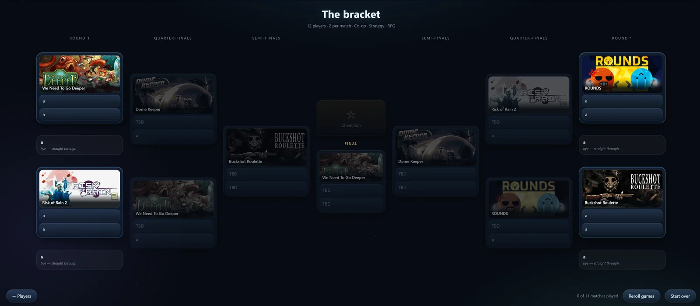

Wheelhouse
Six people in a Discord call, forty minutes of “I don’t know, what do you want to play?” Wheelhouse reads your actual Steam library, works out which games your whole party can genuinely launch, and spins for you.
v1.0 · 67 KB zip · needs
Python 3
(tick “Add python.exe to PATH” when installing). Unzip, double-click
START.bat. No installer, no account, nothing phones home except Steam.

- Status
- Out now
- Backend
- Python
- Frontend
- Vanilla JS
- Runs
- Locally, in browser
- Install
- Double-click START.bat
The actual problem
Every random-game picker has the same flaw: it will happily land on a game only one person owns. Then you spin again. Then again. The randomiser becomes another thing to argue about.
The fix is knowing who owns what. Wheelhouse reads your Steam Family ownership, so it knows there are three copies of one game and one copy of another, and only puts things on the wheel that your whole party can actually launch. Every tile also tells you how many copies exist and how many hours the family has already put in.
How a night runs
Pick your categories. Co-op, strategy, RPG, horror, whatever the mood is. Each category shows how many games it holds and, more usefully, how many of those fit a party of this size.
Spin. The wheel is built from exactly the games that survived those filters. Picked games get pulled off so a re-spin never repeats, and there is a running history down the side.
Or run a bracket. If one game is not enough, it will build a full tournament — seeded, with byes, all the way to a final. That started as a joke and became the feature people actually use.
Things I learned building it
Auth you cannot control is a UX problem, not a bug
The Steam Family data needs a web token that expires roughly every 24 hours. There is no refresh flow and nothing I can do about that from outside Steam.
So instead of pretending, the app is honest about it: a status bar across the top says how long the token has left and states plainly when it has died. Re-pasting takes ten seconds and your wheel setup is untouched. A limitation you explain clearly stops being a bug and becomes a step.
Degrade, do not block
Every layer works without the one above it. No token at all? It reads the games installed on this PC and you can spin immediately. Token but no Web API key? Family members show as SteamID numbers instead of names. Nothing ever refuses to start because one optional thing is missing.
Local means local
It runs a small Python server on your own machine and opens in your browser.
Your credentials sit in a config.json next to the app and are
only ever sent to Steam. No account on my end, because I do not want to be
responsible for anybody's Steam token.
Wheelhouse is an unofficial hobby project. It is not made by, endorsed by or affiliated with Valve — Steam is their trademark, and this just reads the library you already own.
Screens



